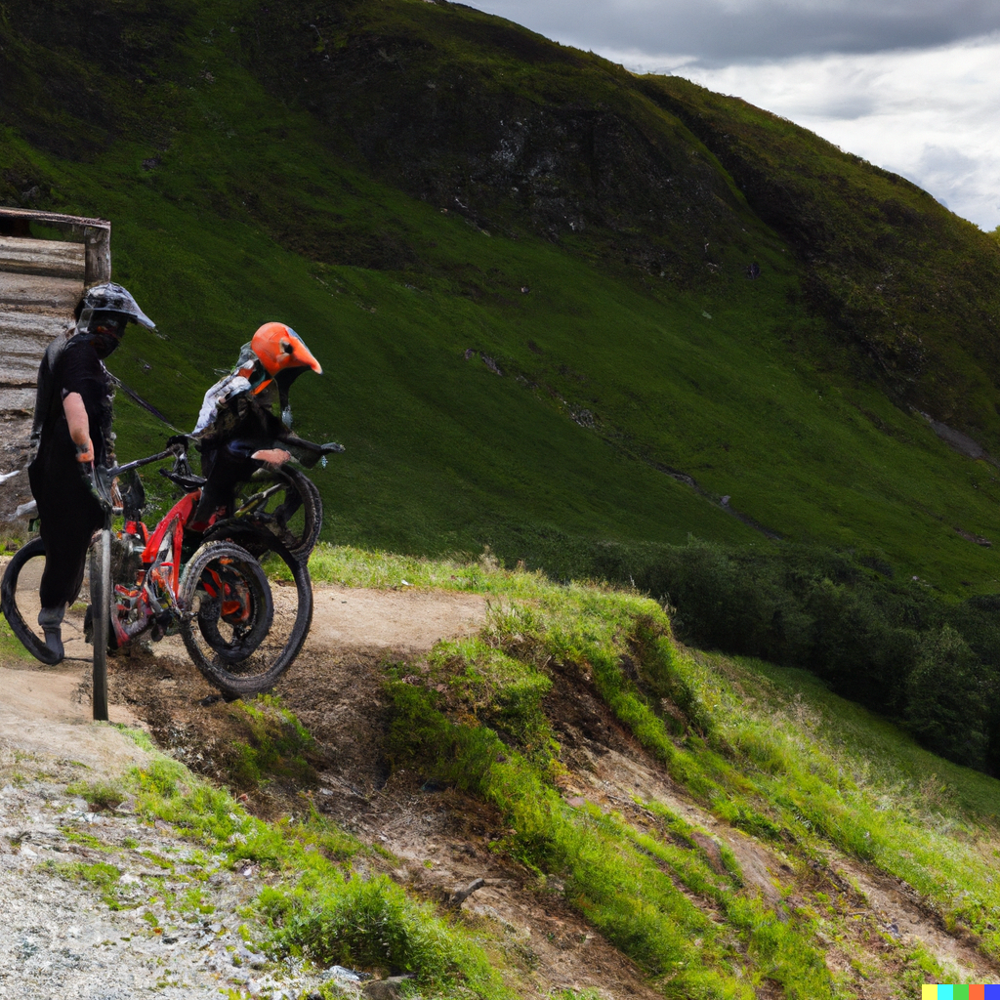
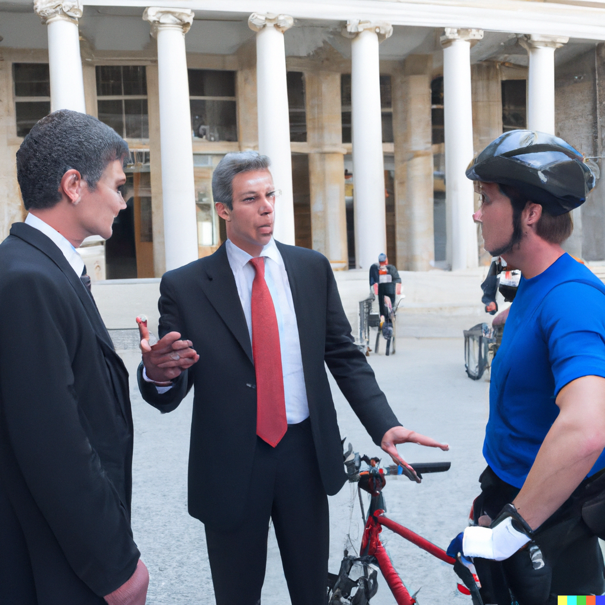

Every endeavour undertaken carries an element of risk, every aspect of life, including business.
Although business risk is less likely to involve physical injury, not identifying and managing risk in business can result in the death of a business or business idea, therefore not looking into the risks and managing risks are a significant aspect of business operation and management. In this report, we will be looking into the risks associated with the development, launch and growth of the Cyclopedia app and its business model.

There are many risk assessment models, for every aspect of business and industry, many based on the possibility of injury or physical damage, to people, property and environmental damage (Rausand 2011) but when it comes to risks involved in software development, the metrics are more limited. Fraunhofer IESE has developed what is called the Cost Estimate, Benchmarking and Risk assessment method for use with software engineering and software development industries.(Trendowicz 2013)While this risk assessment method primarily focusses on the effort put into a project Vs productivity, it could be argued that when creating an application as a labour of love or hobby, then the risk factors are mainly irrelevant with regards to business outcomes, as the aim of the development might be for personal satisfaction, a learning outcome, or a desire to ensure a safer community, things which can be difficult to quantify in a financial return sense.
Without an aim for the project or product, it’s difficult to determine risk. You will not have a metric with which to measure success or failure. As the definition of risk as defined by ISO standards 31000 as the influence of uncertainty on an organisation’s objectives. (Angela et al. 2020), the objectives of Cyclopedia are 2-fold, that of providing an application and resource to ensure rider safety with up to date and accurate information, and to provide a database for sale to organisations responsible for maintenance of public infrastructure used by cyclists, to enable them to reduce costs, legislative exposure and provide a better service to the public.
The risks we are looking at in relation to our application and business model can be divided into 2 main categories, though the 2 can be intertwined.
Risk from a business development perspective.
Risks associated with the technology, software development and back-end systems.
The biggest risk identified is attracting, or the failure to attract a user base, and continuing to grow that user base over time. This is the greatest risk as without the user base, we will not have a product, the data, to sell to organisations responsible for cycle track and bikeway maintenance. We will also fail in achieving the aim of ensuring a safer cycling environment that will encourage more commuters to look at cycling as a viable commuting option. Studies have shown that improved cycling infrastructure and a safe cycling environment increases the number of trips taken by bush bike, reducing traffic congestion, and improving health benefits. (Hong, McArthur & Livingston 2019)
Mitigation strategies to reduce this primary risk will also help lower the likelihood of other risks impacting on the business model and use of the application by the cycling and general public.

One strategy to boost user numbers would be a social media advertising campaign, identifying influencers in the cycling community, and asking them for honest feedback while using the app. Advertising the fact that the use of Cylopedia by the cycling community will lead to improvements in cycling infrastructure, essentially allowing cyclist to take ownership and feel part of the solution and see real improvements in infrastructure, and therefore develop more interest in both the app and cycling in general.
This leads onto the second category of risk, The technology. Software development and back-end systems. Obvious risks are in development are ensuring the application is capable of being used on various user devices with differing operating systems, including desktop computers.
Vitally important is database and information security. Customers and users need to be sure that data retrieved using the app, including user payment data is secure and will not be abused. Users need to trust the systems in place will not compromise their privacy or they will no longer use the app and generate negative publicity (Ramji 2021).
To ensure a stronger and growing user database, we need to ensure the application itself, is accurate, reliable, and easy to use. Users' satisfaction is reliant in part on seeing feedback on their reports of dangerous conditions, from organisations responsible for path maintenance.
Unfortunately acting on user track and path feedback by organisations responsible for track and path maintenance fall outside of our control. The financial incentive in money saved, by those organisations, in acting on the data provided should go some way to mitigating this risk.
The help reduce the impact of this risk could be the use of data age, and repeated reporting of that same hazard, to give priority to the data provided to the organisations responsible to help encourage rapid resolution of the issues flagged by the users of those paths
Regular reporting to both our database customers, those responsible for cycling infrastructure and our user database is critical. Real time reporting of hazards to our data customers is crucial in effecting timely repairs to reduce the risk of injury, but also reduce the risk of exposure to legal action against the organisations responsible for infrastructure maintenance.
Reporting back to our user database on the actions taken in response to their hazard reports is a significant factor in ensuring an improving user experience (STAFFARONI 2020) and will continue to build trust with the user and encourage positive shared experiences (Debever 2019) leading to more commuters taking up cycling as a commute or transport option.